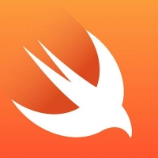
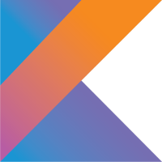

Kätzchen Track Selector
SCRATCH
A programming language designed for young people.

Swift
This language was developed to create applications for Apple platforms.
C#
A general-purpose language designed by microsoft to work across a variety of platfroms.

Koitlin
A multi-purpose JAVA-based language for Android application development.
We all have come here for one reason, coding. At Kätzchen we are prepared to assist your curiousity, discuss the financials, set you up with some pre-coursework, and plant a seed that will grow into a career. Please enjoy this brief quiz along with small descriptions of what we offer.
Kätzchen Languages
- SCRATCH
- Swift
- C#
- Koitlin
A programming language designed for young people.
This language was developed to create applications for Apple platforms.
A general-purpose language designed by microsoft to work across a variety of platfroms.
A multi-purpose JAVA-based language for Android application development.
Suggester
Your results indicate you might be interested in Scratch.
It appears you might be interested in Swift.
You should consider C#.
It might benefit you to check out Koitlin.
- Online Track
- Online Track w/ mentor
- In-person Track part-time
- In-person Track full-time
Ideal for single stack and multi-stack hobbyist
Ideal for single stack and multi-stack hobbyists intent on making a career out of what is learned.
Ideal for a working individual who has plans to expand development in a delicate manner
Balls to the wall, full-immersion, the real deal, it doesn't get any better than this program to end all programs which naturally sets up particpants through a world of hurt to achieve that dream job.